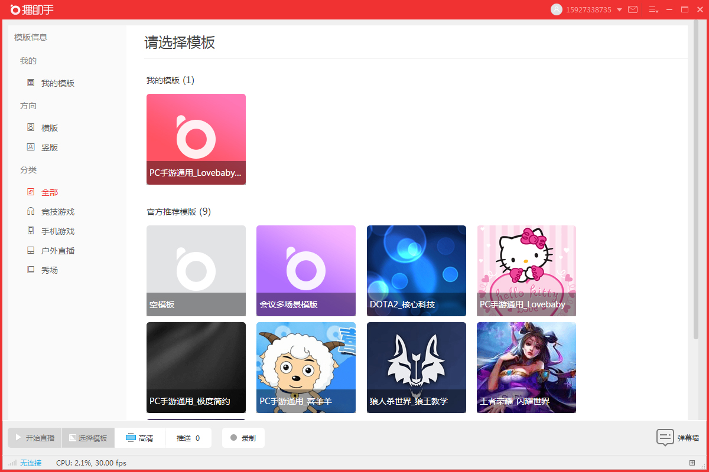
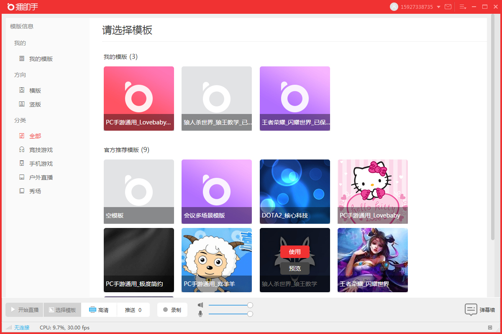

选择官方推荐模板，主播登陆播助手成功后进入选择模板界面如下图，选择主播心仪的模板，将鼠标移到模板上，会出现“使用”和“浏览”按钮，点击“浏览”页面会出现一张该模板展示图，点击使用就可以进入舞台主界面，界面布局与选择的模板相同。

主播在使用过模板后，所有使用过的模板将保存在模板选择界面“我的模板”下，方便主播下次使用。
模板选择界面会展示“您最近使用的模板”，这里按照最新使用时间排序，保留最新使用的四个模板。
